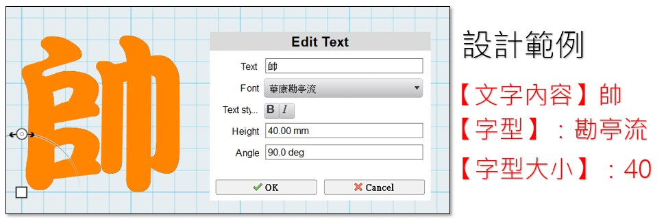

❤️ 3D - 姓名鑰匙圈
🔹 姓名鑰匙圈 - 中文
- 在書局或紀念品商店，常常可以看到姓名鑰匙圈，如果能有一個與自己名字相關的鑰匙圈裝飾，一定很特別。
- 以下是學生的姓名鑰匙圈設計作品：
-
接下來，我們會以「一個中文字」的姓名為主題，來設計鑰匙圈的裝飾。
打洞練習
- 鑰匙圈裝飾為了固定的功能，需要在上面打出一個洞。
- 打洞的操作與一個哆啦A夢的道具很像。在漫畫人物哆啦A夢的百寶袋中，有一個神奇的道具是「超空間割刀」。
- 它可以在任何地方做出超空間櫥櫃，用來儲存物品，當作保險箱用。又名「儲物箱刀片」。

- (資料來源:1)
- 接下來，我們先來練習在3D物件上打洞。
-
這邊的操作動作很多，同學們要仔細聽講，並認真練習。我們會先在平面上畫出圓形草圖。
-
一開始，先找到圓形草圖的功能。
-

-
接下來，畫出圓形草圖的形狀。
-

-
再來，找到擠出Extrude的功能(齒輪選單)
-
最後滑鼠拖曳拉出，完成打洞的練習。(可以多打幾個洞)
-

文字草圖
- 接下來，開始正式的姓名鑰匙圈設計。
- 中文姓名鑰匙圈建議以「1個中文字」為佳，要選擇哪一個字呢？
- 姓名鑰匙圈是要給我自己？還是要送給家人呢？
- 姓名鑰匙圈可以用在什麼地方？

-
電腦中的文字有不同的字型，有的字型粗，有的字型細，各有不同的風格。
-

-
決定內容與字型之後，接下來要準備文字草圖。
-
設定文字的草圖內容，填入「文字內容」、擇擇「字型」，字型大小填「40」mm。
-

-
完成後的文字草圖設計如下，請做出你自己的設計：
-

擠出成形
建構中…
打洞設計
建構中…
鏤空補線
建構中…
-
左圖來源 由 ©藤子プロ・小學館・テレビ朝日・シンエイ・ADK - https://www.shogakukan.co.jp/pr/tencomi/doraemon/, 合理使用, https://zh.wikipedia.org/w/index.php?curid=8075604 ； 右圖來源 哆啦A夢中文網 https://chinesedora.com/database/tag/%E8%B6%85%E7%A9%BA%E9%96%93%E5%89%B2%E5%88%80 ↩